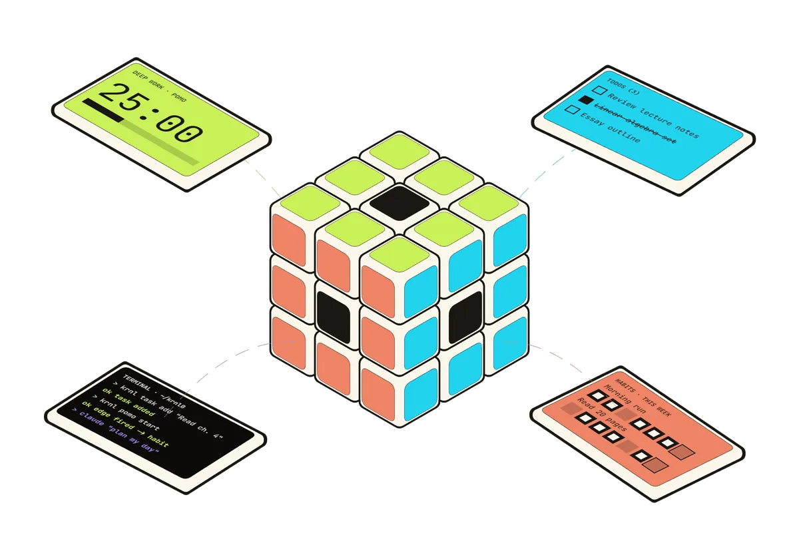

FreeNo accountOpen source
Get
KRNL0.
Your timer, to-dos, habits, calendar and clock on one canvas. It installs in a minute, and your plan stays on your computer.
You're on a phone. KRNL0 runs on a computer: open this page on your Windows PC, Mac or Linux machine.

Pick your computer
KRNL0 for Windows
Get the installerWindows doesn't know who made KRNL0 yet: a signing certificate costs money, and this is a free app built in public on GitHub. You confirm once, and Windows won't ask again.
- Open the file you downloaded.It's in your Downloads folder:
KRNL0-Setup.exe - Click "More info".A blue window says "Windows protected your PC".
- Click "Run anyway".It installs just for you, no admin needed, in a few seconds.
- KRNL0 opens.Find it in the Start menu from now on.
KRNL0 for Mac
Get the disk imageKRNL0 isn't signed by Apple yet, so the first time you open it, macOS asks you to allow it. After that it opens like any other app.
- Open the .dmg and drag KRNL0 into Applications.Then eject the disk image.
- Open KRNL0 from Applications.macOS says it can't check the app. Click Done.
- Go to System Settings, then Privacy & Security.Scroll down and click Open Anyway next to KRNL0, then confirm.
- KRNL0 opens.macOS remembers your choice. On older macOS, right-click the app and choose Open instead.
KRNL0 for Linux
Get the AppImageOne file, nothing to install: an AppImage runs on most distributions.
- Download the .AppImage file.Save it anywhere, your home folder is fine.
- Allow it to run.Right-click it, open Properties, and turn on Allow executing file as program.
- Double-click it.KRNL0 runs straight from the file.
UpdatingDownload the new version here and run it over the old one. Your board lives in your Documents folder and stays as it is.
Stays on your computerNo account, no tracking. YouTube videos and AI reach their own services only when you use them.
Free and openRead the code, build it yourself, or help make it better. MIT licence.